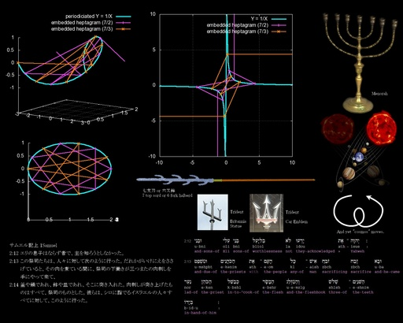
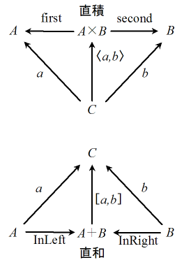

時間泥棒の夕べ − 排中律と call/cc
「量子」という考え方を御存知あろう。その特徴として、複数の排他的状態が「可能性」として現実に並存し、観測によってその状態が確定する解釈が有名である。<ruby><rb>喩</rb><rt>たと</rt></ruby>えれば、先に書いた七芒星の埋め込みの記事で、平面への展開図が発散する方向は確定していないが、空間への埋め込みにおいては、グラフの作画者はスピンの巻き方を左(InLeft)か右(InRight)に決定せざるをえないようなものだ。
この図のグラフでは、Y = 1/X の Y 軸の発散部分を三次元の円筒上に「繰り込ん」で、そこに七芒星を描いています。それを平面に直したグラフも描いていますが、星型の辺部分は、単純に点を直線でつないでいるだけですから、無限に発散する部分は必ずしも、プラスとマイナスで逆方向に描く必要はありません。 一方、そう意志を持ってなされた実験において、そういったスピンを持った「量子」が、どの方向に向かっているかはわかりきったことだ。圏論で「直積 (product)」を最初に習ったことと思うが、その定義において、固定された複数の射が向かう対象への任意の射が、その任意の射の組に対し関数的に唯一求まる射と固定された射の合成となるならば、固定された射が発する対象は、固定された射が着く複数の対象の直積として区別が付かない。「唯一の道」が対象すなわち「何者であったか」を確定し、わかりきったこととする。InLeft と InRight によって作られる対象「直和(coproduct)」は直積の双対概念である。その「唯一の道」の向きは、直積とは真逆になる。
下に書く Haskell のソースでは、直積 A×B は Prod a b と、直和 A＋B は Sum a b となっています。Haskell であるデータ c が型 C を持つことは c :: C と記述し、X から Y への関数の型は f :: X->Y と記述します。 任意の A, B という型について、first :: (Prod A B)->A と second :: (Prod A B)->B がすでに定義されていたとします、ある二つの関数 fa :: A->C, fb :: B->C を取ってきたとき、fab :: (Prod A B)->C が常に fab(x::(Prod A B)) = fa(first(x))::C となるのは、結局、この定義と同じ意味を持つもの「唯一つ」になります。実際 Haskell には、 Prod A B と同じ「機能」を持つ Tuple すなわち (A,B) は、常に Prod A B と相互に変換できることになります。 同様なのですが、普段から数学で(無意識に)使う直積に比べ、矢印の方向が逆の直和については、なじみがないかもしれません。アイデアとしては、厳しく型付けする場合、ある型と別の型とが同じデータを持つ可能性があったとき、どちらかの関数を使えと指示するのは危険と見なされるのですが、あらかじめ違う型を表す「ラベル」を先に付けておけば、そもそも違うデータなので安全に扱えるということがあります。このラベルが InLeft と InRight です。Haskell にはこのラベルに関する「パターンマッチ」という機能があり、ga::C->A, gb::C->B とすると、gab(InLeft(x)::(Sum A B)) = ga(x)、gab(InRight(y)::(Sum A B)) = gb(X) と定義すれば、gab は A と B のどちらのデータも扱える関数とほぼなります。Haskell には同じ「機能」を持つものとして、Either A B が定義されていますが、それと Sum A B は常に相互変換ができ区別が付きません。 直観主義を称する論理学が嫌ったのは排中律「命題またはその命題の否定のどちらかは<ruby><rb>恒</rb><rt>つね</rt></ruby>に真」であった。この「どちらか」という選言は、圏論などでは直和に相当するため、直和のある系でこの排中律に相当するものが何に相当するのかは、直観的に不明暸となるのは当然であろう。 プログラミング言語の中に、関数型言語と総称される厳格な「型」付けを使用者に課すものがある。その「型」は論理命題であると同時に圏論の対象であって、実際に動くプログラムはその命題の証明に対応するという定説があり、むしろ、その性質の現実的な応用として関数型言語が設計されている。 その系において直和が定義しうるのは明らかとできるが、命題の否定を「型」としてどう表すかは、それほど直観的ではなかった。ある「命題」の型をとって任意の型を返すような関数を許せば、それは引数に現れない変数が返ること、「証明」のない何かが返ることをほぼ示すため、厳格に「型付け」する意味がなくなる。が、仮にそれを許せるなら、そのような関数の型を命題の否定としてよいとまでは言えていた。 近年、しかし、それは「継続(continuation)」という概念のみを導入することで、排中律のようなものまで表現しうると解決されることになった。無限に継続する証明は許されず、それは命題が否定されるも同じことである。ある型の「証明」たるプログラムを適用したとき、それが「継続」に落ちるが、そこからの復帰が定義されているなら、その復帰が継続にのこすものは、何か不明な、だからこそ任意の型でよいことを利用して、否定を表現できるというのである。 callCC は、call with current-continuation の略です。応用として例外処理などが書けます。プログラムでは関数の引数に別の関数を渡すことがよく行なわれますが、この「関数」としてなんと(C言語などにおける) return を渡せるようにしたのが、この機構と言えます。 記号論理学的に定義を書いた callCC の論文によると、形式的に callCC は、「ある解釈の環境 E[] 下で、M という項が問題になっているとき E[M] と書くとすると、E[call/cc(M)] |-> E[M λz. A(E[z])]。この A は環境を固定化し、A が解釈されそうになると、その内に留めた環境に引き戻す効果をもつ」と、だいたいできそうです。 callCC の型は callCC :: ((a->Cont r b)->Cont r a)->(Cont r a) となります。Haskell ではラムダ抽象 (λx. M[x]) は、慣れないと記号の重なりがややこしいですが、(\x -> M x) と記述します。callCC は (callCC (\k -> return (M k))) という形で利用されることが多いでしょう。何かを取ってそれをそのまま後続に継ぐ return の型は、通常、 a->Cont r a となりますが、callCC の型は、何かを取ってどこかに返すk :: (a->Cont r b) が仮にあるとすると、それを利用した M k が k が取るべき引数と同じ型を持つように M k を作れば、最初 M k を return しますが、k という関数に引数が与えられると、その return を「なかったこと」にして、こんどは k に与えられたはずの引数を return したものとして動作します。 排中律に相当するプログラムも「値」であるに違いない。ならば、それを引数と取るプログラムも書きうる。それが本稿の主題である。下のプログラムをご覧いただきたい。通常のプログラムであれば、直和を処理する関数に「値」が与えられれば、その値はどちらかでしかないと「唯一の道」が通ずるがゆえの直和である。 だが、このプログラムはそう動かない。どちらかでしかないはずなのに、「値」は、まるで、「排他的状態」の両方でありうるとして動くかのように見えるのである。 後述のウェブページにあった「排中律」の定義を参考にプログラムしています。 {-# LANGUAGE GADTs, RankNTypes, TypeFamilies, ScopedTypeVariables #-} module Momo where import System import Control.Monad.Cont {- 直和の定義。 -} data Sum x y = InLeft x | InRight y {- 直積の定義。 -} data Prod a b = Prod a b first :: Prod a b -> a first (Prod x y) = x second :: Prod a b -> b second (Prod x y) = y {- 「物語」のはじまり。 -} data Special = SomethingSpecial deriving (Eq, Show) data Ordinary = SomethingOrdinary deriving (Eq, Show) {- 「排中律」を gigi という名前で参照します。 -} gigi :: (forall a b r. Cont r (Sum a (a -> Cont r b))) gigi = callCC(\k -> return (InRight (\x -> k(InLeft(x))))); {- liliana は何か普通のものを返します。 -} liliana :: (forall r. Cont r Ordinary) liliana = return SomethingOrdinary {- nino は InLeft のラベルがあれば、特別なものが手に入ったと判断します。 InRight のラベルがあれば、liliana から返されたものを受け取るのみです。 -} nino :: (forall b r. Cont r String) nino = gigi >>= \s -> case s of { InRight(query) -> let { experience = "Search Something...\n" } in liliana >>= (\answer -> return(Prod answer experience)) >>= \(x :: Prod Ordinary String) -> return (experience ++ "Unhappy End. Got " ++ (show (first x))); InLeft(x:: Prod Special String) -> return ((second x) ++ "Happy End. Got " ++ (show (first x))); } {- hora は何か特別なものを返します。 -} hora :: (forall r. Cont r Special) hora = return SomethingSpecial {- nicola は nino の「分身」で、ほとんど同じ定義を持っています。 nicola は InLeft のラベルがあれば、特別なものが手に入ったと判断します。 InRight のラベルがあれば、hora から返されたものを受け取って、query に渡します。 -} nicola :: (forall r. Cont r String) nicola = gigi >>= \s -> case s of { InRight(query) -> let { experience = "Search Something...\n" } in hora >>= (\answer -> query(Prod answer experience)) >>= \(x :: Prod Ordinary String) -> return (experience ++ "Unhappy End. Got " ++ (show (first x))); InLeft(x :: Prod Special String) -> return ((second x) ++ "Happy End. Got " ++ (show (first x))); } {- 「継続」を走らせた結果を出力させます -} main = do runCont nino putStrLn runCont nicola putStrLn 以上のソースを momo_0.hs として Haskell のインタプリタ(WIndows では WinGHCi)に渡すと次のような結果が得られます。 Prelude> :load *momo_0 [1 of 1] Compiling Momo ( momo_0.hs, interpreted ) Ok, modules loaded: Momo. *Momo> main Search Something... Unhappy End. Got SomethingOrdinary Search Something... Happy End. Got SomethingSpecial ある環境の中の環境にまで処理が進んでいたとき、復帰が呼ばれる。すると、その中の環境であったことは捨てて、元の環境の続きに戻る。まるで、中の環境は「死んだ夢の世界」のように捨てられるわけだ。ただし、中の環境から値は返すことができる……と。 物語風に書けば上記プログラムはその実行を次のごとく辿れよう。 <i> 大魔王モモ(Momo)は、やんちゃなジジ(gigi)を地上に送ります。ジジは料理店で働きます。 店主はジジに珍宝である秘伝のスパイス(x:Special) があるかと聞きます。ジジはそんなことは知りません。でも夢でモモがそっとささやきました。「ないことにしてあなたが成長すれば、あなたの敵がきっとそれを発明してきます。その世界を苦しむというなら、あなたをそれが今あった世界に導きましょう。」 店主がニノ(nino)さんのとき。 ジジは「ない」と答えました。ジジは店主ニノのところで働き続けました。ニノの周りではリリアーナ(liliana)が何か(SomethingOrdinary)を持っていますから、“私”はそれを渡すと、ジジはそれで十分だろうと満足することにしました。そのまま、ジジは老い、きっと死んだのでしょう。 ジジは「ある」と答えて珍宝(SomethingSpecial)を取り出すはずでした。でも、それは別のお話。 店主がニコラ(nicola)さんのとき。 ジジは「ない」と答えました。ジジは店主ニコラのところで働き続けました。するとモモが言っていたとおり、賢者ホラ(hora)の教えを知った“敵”がそれ(SomethingSpecial)を持ってきました。でも、それを疑問に抱きながらも、今さら、それが手に入ってもどうすることもできません。そして、ジジは老い、きっと死んだのでしょう。 ジジは「ある」と答えて珍宝(SomethingSpecial)を取り出しました。ニコラさんは大喜びです。“ライバル”がそれを見て悔しがっています。 </i> 群論において Module は環における加群を意味する。プログラムにおける Module は、プログラムの任意の場所に読みこまれることを想定し、名前の重なりがないように作る単位をほぼ意味する。その名前が Module の「どちらか」であるかを決定するもので、多くの系で、ある Module から使用を宣言された Module から、使用元の Module にある名前を輪のごとく使われることに耐える。 名前の修辞を変えることで、内と外を隔てるようなものだ。その機能のおかげで、私は具体化(instantiate)された物語を対象(object)に読みこんで名前を付すことができた。なお、関数型言語とはおよそ対称的なものにオブジェクト (object)指向言語があるが、この物語のような読みこみは、かつて私が呪術と見たてたごとくオブジェクト指向で疑人的な実体(entity)を想定することと同じではない。もっとも、オブジェクト指向風と言いつつ概念の名前だけ借用して違うことをやっていることも少なくはないのだが。 もちろん、これらの解釈は、人によって厳密と見るか厳密の否定と見るか定かではない。このプログラムで、私はキャラクターを読み込んだのはときに関数であり値であり、その「型」は唯一ではない。しかし、もちろん、その物語を作った“私”という人物、解釈する“あなた”という人物は唯一無二の存在であり、本稿が複数のキャラクターになると見えても、一人の人間が書いているのに間違いはない。 興に入って脱線が過ぎたようだ。本題に復帰しよう。排中律が可能ならば背理法・二重否定の除去もできないはずはなかろう。ならば、次のような「行ったり来たり」も可能である。 上のプログラムを少し複雑にしてみました。nino の部分が beppo に、 nicola の部分が kassiopeia に変わって、nino の役割が変化したほか、新しい定義もいろいろあります。 {-# LANGUAGE GADTs, RankNTypes, TypeFamilies, ScopedTypeVariables #-} module Momo where import System import Control.Monad.Cont {- 直和の定義。 -} data Sum x y = InLeft x | InRight y {- 直積の定義。 -} data Prod a b = Prod a b first :: Prod a b -> a first (Prod x y) = x second :: Prod a b -> b second (Prod x y) = y {- 「物語」のはじまり。 -} data Special = SomethingSpecial deriving (Eq, Show) data Ordinary = SomethingOrdinary deriving (Eq, Show) {- 「排中律」を gigi という名前で参照します。 -} gigi :: (forall a b r. Cont r (Sum a (a -> Cont r b))) gigi = callCC (\k -> return (InRight (\x -> k (InLeft x)))); {- 言葉と普通な何かが Service。言葉と特別な何かが Love と定義します。-} type Service = Prod Ordinary String type Love = Prod Special String {- liliana は何か普通のものを返します。 -} liliana :: (forall r. Cont r Ordinary) liliana = return SomethingOrdinary {- nino は liliana から受け取った dish に spice をかけて Service を求める claimant に渡します。 -} nino :: (forall a b r. String->(Prod (Service->Cont r a) b)->Cont r a) nino spice claimant = liliana >>= \dish -> ((first claimant) (Prod dish spice)) {- finish は終了時の出力方法を定義します。 -} finish ishappy experience gotten = let { dish = first gotten; spice = second gotten; happiness = if ishappy then "Happy" else "Unhappy"; } in return (spice ++ experience ++ happiness ++ " End. Got " ++ (show dish) ++ "."); {- resistant は claim があったとき、proof と訴えを返す方法と 証明すべき truth を組にして準備します。 -} resistant proof truth = Prod (\claim -> return (Prod proof (second claim))) truth {- beppo は InLeft のラベルがあれば、momo が nino の命令で何か特別なも のを手に入れたと判断します。 InRight のラベルがあれば、liliana から受けとったものへの反応を nino に渡すのみです。 -} beppo = \s -> case s of { InRight(query) -> let { experience = "Search Something...\n"; } in liliana >>= (\answer -> return (resistant answer experience)) >>= (nino "Beg to ") >>= \(g :: Service) -> finish False experience g; InLeft(momo) -> let { experience = second momo; } in (nino "Order to " momo) >>= \(g :: Love) -> finish True experience g; } {- hora は何か特別なものを返します。 -} hora :: (forall r. Cont r Special) hora = return SomethingSpecial {- kassiopeia は InLeft のラベルがあれば、momo が nino の命令で何か特 別なものを手に入れたと判断します。 InRight のラベルがあれば、hora から受けとったものを query してから その反応を nino に渡すのみです。 -} kassiopeia = \s -> case s of { InRight(query) -> let { experience = "Search Something...\n"; } in hora >>= (\answer -> query (resistant answer experience)) >>= (nino "Beg to ") >>= \(g :: Service) -> finish False experience g; InLeft(momo) -> let { experience = second momo; } in (nino "Order to " momo) >>= \(g :: Love) -> finish True experience g; } main = do runCont (gigi >>= beppo) putStrLn runCont (gigi >>= kassiopeia) putStrLn 以上のソースを momo.hs として Haskell のインタプリタ(Windows では WinGHCi)に渡すと次のような結果が得られます。 Prelude> :load *momo [1 of 1] Compiling Momo ( momo.hs, interpreted ) Ok, modules loaded: Momo. *Momo> main Beg to Search Something... Unhappy End. Got SomethingOrdinary. Order to Search Something... Happy End. Got SomethingSpecial. 名前の使い方が同じだからといって、オマージュとしての意味はあっても、「唯一の道」を辿って同じ物語を書く必要はない。この場合の「物語」をどう書くかは読者諸兄におまかせしよう。 ■あとがき 実は、書いていることは特別なことではなく、プログラミングの理論家や論理学者にとっては普通の基礎的なことかもしれません。 でも、わざとエラそうで煙に巻くような文体と、誠実そうだが難しいことをそのまま書いているだけの説明的な文体を交互に使い、どちらかがわかりそうだけどわからない……でも、なにか大層なことを言っているのでは……と思わせようとしました。 その雰囲気だけでも読んでいただけたらうれしいのですが、うまくいったかどうか……。 ■関連 ツール類は、ポスターについては七芒星の埋め込みの記事をご参照いただくとして、圏論の図は Dynamic Draw で描いています。Haskell のインタプリタ WinGHCi は、HaskellPlatform-2010.2.0.0 のものを使っています。 ●momo_hs.shar。上の momo.hs や momo_0.hs のほか callCC に関する例をまとめたアーカイブ。(シェルアーカイブ形式。シェルコマンドとして実行するか unshar を使う。) ●ミヒャエル・エンデ(著)、大島かおり(訳)：『モモ』(岩波書店, 1974年／ 1976年)。名前はこの物語を参照していますが、設定は、アニメ『魔法のプリンセス ミンキーモモ』から借りている部分もあります。 ●《JRFのひとこと:call/cc を知る。…》。本稿のアイデアとなった私のつぶやき。ここで書いたことができるか Haskell で確かめようというのが、本稿の動機でした。 ●《（forall x. （（x-＞r）-＞r）-＞x）-＞Either a （a-＞r） - ヒビルテ》、《d.y.d.：Curry-Howard Isomorphism》。排中律の定義を call/cc を用いて表す話をこれらのサイトで知りました。背理法は例外処理にあたると恩師から聴いていたので気になっていたのですが、その方法をやっと知ることができました。投稿後、《callccによる排中律の証明 - sumiiの日記》には「悪魔」を使ったたとえ話があるのを知りました。もしかすると私はここを読んでインスピレーションを得たのかな？ ●Timothy G. Griffin : “A Formulae-as-Type Notion of Control” in “POPL '90 Proceedings of the 17th ACM SIGPLAN-SIGACT symposium on Principles of programming languages”. 上述の「call/cc の論文」。なお、私はこのサイトとは別のところで手に入れました。 ●《「物理系実務者のための圏論入門」への補遺＋檜山の戯言 - 檜山正幸のキマイラ飼育記》。圏論と量子論をつなごうという研究は、本稿とはまったく違うものなのかもしれませんが、あるようです。 ●《外作用的簡易経済シミュレーションのアイデアと Perl による実装》。私が最近書いた別の記事。齋藤有貴：《ミヒャエル・エンデと「お金」》によれば、エンデは利子のない地域通貨を求めたとのこと。私は、エンデと似た関心を持ちながら、対極に位置する人物なのかもしれません。彼が左派なら、私は右派になるのでしょうか。 ●《Haskell の callCC で goto を作る》。本稿の姉妹記事。今回の Haskell 独習の副産物で、本稿の「タネあかし」的な側面があります。ここには果てしなく継続すると見なせる server があり、そこからメッセージを受け取るための service の「門」が提供されます。callCC の場所で無限ループが「あった」というに留まらず、なんと「復帰」を別の継続に渡すようなことができるのです。callCC による継続から、service を外に出したとき、個が成立するかのように読むことができるかもしれません。 更新：2011-01-15--2011-01-20 初公開：2011年01月20日 19:41:30 最新版：2012年01月24日 20:23:24
Trackbacks: 《Haskell の callCC で goto を作る》 from JRF のソフトウェア Tips 本稿では、callCC を使ってループを作り、まるで goto のように見えるような動作を構成してみる。Haskell は、強く型付けされた関数型言語だが、十分実用的であって、無限ループも普通に書ける。goto が作れたからと言ってうれしいことはないかもしれないが、その動作がおよそ非直観的で興味深く、これはぜひ紹介したいと考えたのが、本稿を書いた動機である。... 受信： 2011-01-20 19:48:32 (JST) 《夢 かなう》 from お仕事GOGO!!ブログ 藤丸です。サントリフラワーズという会社がございます。日本の園芸会社のひとつで、あのサントリーの花部門が独立して設立された会社だそうです。そしてその... 受信： 2011-01-20 20:46:21 (JST) 《【勝率８割以上！】よく当たるＦＸ為替レート予想のブログ》 from 毎日更新、よく当たる為替レート予想のブログ 毎日更新、よく当たる為替レート予想のブログ http://sikyoufxbloggers.blog2.fc2.com?kakiko 【サルでも勝てる無料ＦＸ必勝法】 ２０１１年ＦＸ必勝法・攻略法・裏技大公開！ http://www.sikyou.com/main/trade/fx_waza.html?kakiko 【メールマガジン】 勝率８割以上！毎日配信、よく当たる為替レート予想 読者数 4,500人突破！ http://www.mag2... 受信： 2011-01-21 10:32:14 (JST) 《あみだくじ 背理法》 from ブログニュー速！ Apple TVを購入… いうセリフは ある一定の年齢以上の方であれば 懐かしく感じることでしょう。 奇しくもその数年後に高校の数学の授業で 背理法 という証明法を教わったときにまさにこのCMの 「ハイリホー」 のフレーズを思い出し、仲間内で爆笑したコトを思い出しました。もう四半世紀(続きを読む) 1/14おしまい . だれが、ちょっかくって きめたの!?(一同、失笑) 森木さんから藤本さんへ 第2問目の疑問は 「なぜ、僕は男の子なの?」 “背理法"は アホな私でも分かりやすかった。 森木さんは難し... 受信： 2011-02-08 08:40:00 (JST) 《背理法 ロジック》 from のんびりお昼寝 時間泥棒の夕べ [情報工学・コンピュータ科学,箴言・辛言・戯... が書いているのに間違いはない。 興に入って脱線が過ぎたようだ。本題に復帰しよう。排中律が可能ならば背理法・二重否定の除去もできないはずはなかろう。ならば、次のような「行ったり来たり」も可能である。 上のプログラムを 【社内勉強会】年金財源と日銀の国債直接引受 局面」 )にあっては、デフレギャップがわが国の場合膨大ですので、一定期間 ある種の「無税国家」 (米FRB総裁 「バーナンキ総裁の背理法」 と呼ばれるもの)を実現できるので... 受信： 2011-02-19 05:34:33 (JST) 《PinpointFX / Cloud9》 from PinpointFX / Cloud9 ゆるぎない明確なロジックによる裁量トレード手法及び自動売買ソフトウェア 受信： 2011-06-17 08:30:05 (JST) 《眠り姫問題のプログラム》 from JRF のソフトウェア Tips 「眠り姫問題」は意志決定問題と人間原理という二つの分野で共通のテーマセッターとなっている有名な難問なのだそうだ。三浦俊彦『多宇宙と輪廻転生』によると、次のような問題である。 日曜日に、ある実験が始められる。まず、あなたは眠らされる。そのあとフェアなコインが投げられ、表か裏かによって、次の二つの措置が選ばれる。 場合A■表が出た場合 - あなたは月曜日に一度起こされ、インタビューされ、また眠らされ、... 受信： 2017-02-13 05:06:35 (JST) Comments: [E:ship] 更新：検索されやすくするためタイトルに「－ 排中律と call/cc」を付けた。 momo_hs.shar 内のファイルの gigi の上に the law of excluded middle とコメントで書いおいた。実質何も変わっていない。コメント以外の差がないので混乱を避けるために以前のバージョンへのリンクは書きませんが、もし以前のバージョンが必要でしたら、別名でネットに残してありますので、お申し付けください。 投稿: JRF | 2011-01-21 16:19:44 (JST) Some time ago, I needed to buy a good house for my business but I did not earn enough money and could not purchase something. Thank goodness my sister suggested to try to get the mortgage loans from reliable creditors. Hence, I acted that and used to be satisfied with my car loan. 投稿: loan | 2011-11-27 21:31:19 (JST) [E:sign04] 更新：typo というか書き誤りの修正。物語にしたところで、リリアーナが渡すのを「SomethingSpecial」と書いていたのを、「SomethingOrdinary」に修正した。 投稿: JRF | 2012-01-24 20:28:03 (JST) Thanks a lot for a kind of perfect release connecting with this topic ! You have to base your buy dissertation service, I opine. Because a lot of thesis writing services make this and you should write very mini dissertation as well. 投稿: dissertation service | 2012-12-07 12:13:28 (JST) Visit global-soft.com firm (global-soft.com) and find it development in India company that orients on presenting high quality tools and services. 投稿: here | 2013-01-02 12:47:03 (JST) I do opine that it is executable to go to this page, just because simply here students should notice the well done topic connected with this good post. Hence, the thesis service would utilize it for format thesis creating. 投稿: thesis writing | 2013-07-12 10:46:46 (JST) Term papers composing tasks are invented not for lazy students. By the way, I know quantities of high school students who get term paper help "topwritingservice.com" or purchase custom essays in order to show good quality of academic writing. 投稿: paper buy | 2013-09-16 08:36:57 (JST)
Links: 七芒星の埋め込みの記事: http://jrf.cocolog-nifty.com/column/2010/12/post.html callCC の論文: http://portal.acm.org/citation.cfm?id=96714 (hbm) 呪術と見たてた: http://jrf.cocolog-nifty.com/column/2006/03/post_17.html Dynamic Draw: http://dynamicdraw.com/jp/ (hbm) HaskellPlatform: http://hackage.haskell.org/platform/ (hbm) momo_hs.shar: /archive/haskell/momo_hs.shar モモ: http://www.amazon.co.jp/dp/4001106876 魔法のプリンセス ミンキーモモ: http://www.minkymomo.jp/ (hbm) JRFのひとこと:call/cc を知る。…: http://jrf.aboutme.jp/user_statuses/show/114758 （forall x. （（x-＞r）-＞r）-＞x）-＞Either a （a-＞r） - ヒビルテ: http://www.tom.sfc.keio.ac.jp/~sakai/d/?date=20060429#p02 (hbm) d.y.d.：Curry-Howard Isomorphism: http://www.kmonos.net/wlog/61.html (hbm) callccによる排中律の証明 - sumiiの日記: http://d.hatena.ne.jp/sumii/20060507/1147006438 (hbm) A Formulae-as-Type Notion of Control: http://portal.acm.org/citation.cfm?id=96714 (hbm) 「物理系実務者のための圏論入門」への補遺＋檜山の戯言 - 檜山正幸のキマイラ飼育記: http://d.hatena.ne.jp/m-hiyama/20070406/1175835165 (hbm) 外作用的簡易経済シミュレーションのアイデアと Perl による実装: http://jrf.cocolog-nifty.com/society/2011/01/post.html ミヒャエル・エンデと「お金」: http://www.cc.kyoto-su.ac.jp/~konokatu/saitou(08-1-28) (hbm) Haskell の callCC で goto を作る: http://jrf.cocolog-nifty.com/software/2011/01/post-2.html loan: http://goodfinance-blog.com dissertation service: http://primethesis.com here: http://global-soft.com thesis writing: http://master-dissertations.com paper buy: http://www.topwritingservice.com
後方参照 (7 件)
- URL参照 『新約聖書』を『新約聖書略解』とともに読んだ。もう何度目かになるが、「新しい発見… 2016年03月25日
- URL参照 統合失調症のときに妄想した。「真の創造主」の他に自分が創造主だと「勘違い」してい… 2015年09月11日
- URL参照 『日亜対訳・注解 聖クルアーン』を読んだ。 2015年08月18日
- URL参照 フロイト『夢判断』を読んだ。象徴を押し付けるのかと思ったら違った。夢が全て「願望… 2015年05月24日
- URL参照 『ダンガンロンパ』PSP the… 2012年11月06日
- URL参照 フィードバック入力の「マイナスの」時間遅れ…って応答が予測をしていることになるか… 2011年02月25日
- URL参照 プログラム言語 Haskell の独習中。callCC… 2011年01月17日